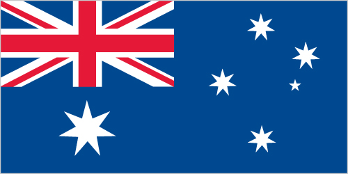
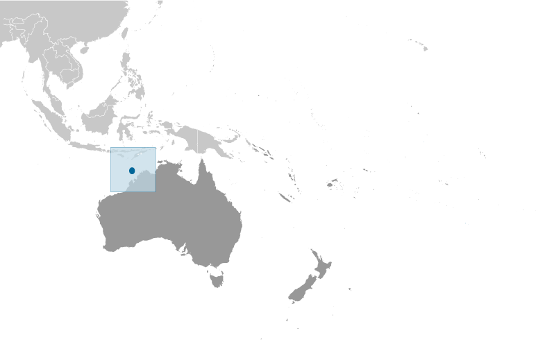

Australia - Oceania ::
Ashmore and Cartier Islands
-
Introduction :: Ashmore and Cartier Islands
-
Background:These uninhabited islands came under Australian authority in 1931; formal administration began two years later. Ashmore Reef supports a rich and diverse avian and marine habitat; in 1983, it became a National Nature Reserve. Cartier Island, a former bombing range, became a marine reserve in 2000.
-
Geography :: Ashmore and Cartier Islands
-
Location:Southeastern Asia, islands in the Indian Ocean, midway between northwestern Australia and Timor islandGeographic coordinates:12 14 S, 123 05 EMap references:Southeast AsiaArea:total: 5 sq kmland: 5 sq kmwater: 0 sq km
note: includes Ashmore Reef (West, Middle, and East Islets) and Cartier Island
country comparison to the world: 250Area - comparative:about eight times the size of the National Mall in Washington, DCLand boundaries:0 kmCoastline:74.1 kmMaritime claims:territorial sea: 12 nmcontiguous zone: 12 nmcontinental shelf: 200-m depth or to the depth of exploitationexclusive fishing zone: 200 nmClimate:tropicalTerrain:low with sand and coralElevation:0 m lowest point: Indian Ocean5 highest point: Cartier IslandNatural resources:fishLand use:0% (2014 est.)Natural hazards:surrounded by shoals and reefs that can pose maritime hazardsEnvironment - current issues:illegal killing of protected wildlife by traditional Indonesian fisherman, as well as fishing by non-traditional Indonesian vessels, are ongoing problems; sea level rise, changes in sea temperature, and ocean acidification are concerns; marine debrisGeography - note:Ashmore Reef National Nature Reserve established in August 1983; Cartier Island Marine Reserve established in 2000 -
People and Society :: Ashmore and Cartier Islands
-
Population:no indigenous inhabitants
note: Indonesian fishermen are allowed access to the lagoon and fresh water at Ashmore Reef's West Island; access to East and Middle Islands is by permit only
-
Government :: Ashmore and Cartier Islands
-
Country name:conventional long form: Territory of Ashmore and Cartier Islandsconventional short form: Ashmore and Cartier Islandsetymology: named after British Captain Samuel ASHMORE, who first sighted his namesake island in 1811, and after the ship Cartier, from which the second island was discovered in 1800Dependency status:territory of Australia; administered from Canberra by the Department of Regional Australia, Local Government, Arts and SportLegal system:the laws of the Commonwealth of Australia and the laws of the Northern Territory of Australia, where applicable, applyCitizenship:see AustraliaDiplomatic representation in the US:none (territory of Australia)Diplomatic representation from the US:none (territory of Australia)Flag description:the flag of Australia is used
-
Economy :: Ashmore and Cartier Islands
-
Economy - overview:no economic activity
-
Transportation :: Ashmore and Cartier Islands
-
Ports and terminals:none; offshore anchorage only
-
Military and Security :: Ashmore and Cartier Islands
-
Military - note:defense is the responsibility of Australia; periodic visits by the Royal Australian Navy and Royal Australian Air Force
-
Transnational Issues :: Ashmore and Cartier Islands
-
Disputes - international:Australia has closed parts of the Ashmore and Cartier reserve to Indonesian traditional fishingIndonesian groups challenge Australia's claim to Ashmore Reef